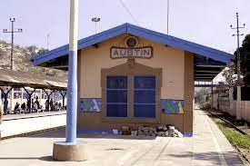
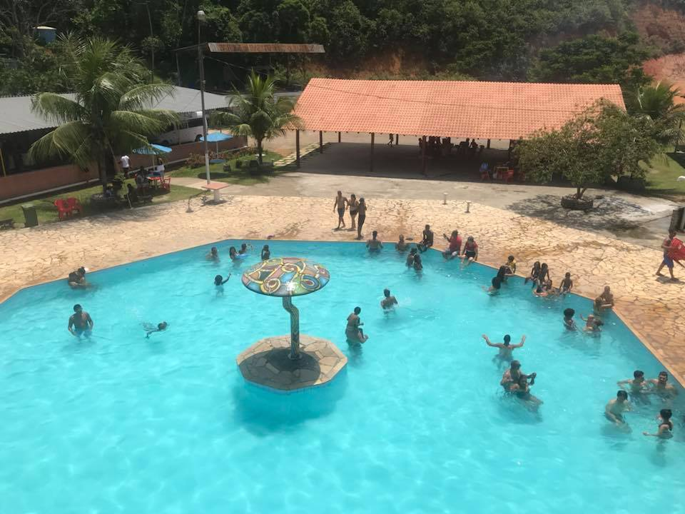
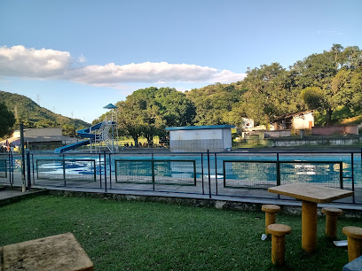

Pontos Turísticos e Históricos
Estação Ferroviária de Austin
Endereço: Rua Coronel Monteiros de Barros, Austin, Nova Iguaçu - RJ, 26087-185. Localizada no Centro de Austin, foi batizada com este nome em homenagem ao engenheiro americano Charles E. Austin. A linha também já serviu para transporte de gados de Carlos Sampaio à Santa Cruz, sendo desativada em 1960. Hoje integra o ramal Japeri da Supervia Trens Urbanos.
Parque de Eventos Sítio da Paz
Endereço: Avenida Governador Roberto da Silveira, Estr. Carlos Sampaio, 4 - Austin, Nova Iguaçu - RJ, 26089-230. Neste local ocorrem shows ao vivo e eventos privados, é bastante frequentado por famílias e grandes grupos com o propósito de realizar atividades de lazer e confraternizações. Recentemente, o local passou por uma grande revitalização.
Nova Fazenda Santa Fé
Endereço: Estrada Tinguazinho, nº 2900, Austin, Nova Iguaçu. A Fazenda Santa Fé também recebe shows ao vivo e eventos privados, alguns destes shows atraem um grande público para as suas dependências. Pensando nisso, a fazenda aumentou sua área e implantou novos equipamentos de lazer.


